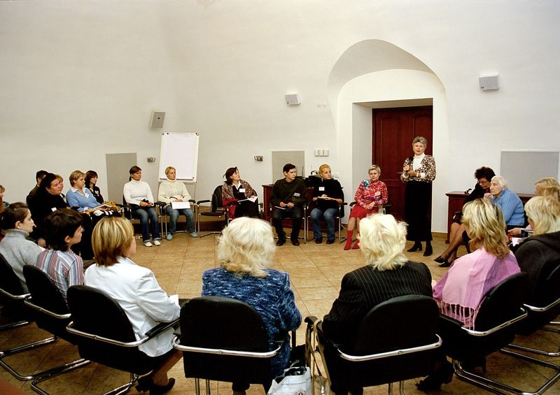

Información divulgativa. No sustituye la valoración de tu equipo médico ni sirve para decidir un tratamiento.


Una definición
La psicooncología es la parte de la oncología que se ocupa de las emociones, los pensamientos, las relaciones y la conducta de las personas con cáncer y de sus familias, en todas las fases: el diagnóstico, el tratamiento, la supervivencia, la recaída, el final de la vida y el duelo.
Nació en los años setenta, cuando la psiquiatra Jimmie Holland creó en el Memorial Sloan Kettering de Nueva York el primer servicio dedicado a ello. Hasta entonces, a menudo ni siquiera se le decía el diagnóstico al paciente.
Qué hace
- Atención psicológica individual, de pareja, familiar o en grupo.
- Detección del malestar emocional: preguntar de forma sistemática cómo está la persona, con herramientas sencillas como el termómetro del malestar (una escala del 0 al 10).
- Tratamiento de la ansiedad, la depresión, el insomnio y el miedo a la recaída.
- Apoyo para comunicar el diagnóstico a la familia y a los hijos.
- Ayuda en las decisiones difíciles y en la adaptación a los cambios del cuerpo, del trabajo y de la vida en pareja.
- Acompañamiento al final de la vida y en el duelo.
- Formación de los profesionales en comunicación de malas noticias.
Quién la hace
Psicólogos clínicos y sanitarios con formación en oncología, psiquiatras (sobre todo cuando hace falta medicación), y equipos de cuidados paliativos y de trabajo social que colaboran con ellos. En España muchos hospitales tienen unidades de psicooncología; la Asociación Española Contra el Cáncer ofrece atención psicológica gratuita a pacientes y familiares.
Cuándo pedirla
No hace falta «estar mal» para consultar. Conviene pedirla, sobre todo, si:
- La angustia, la tristeza o el miedo te impiden dormir, comer, trabajar o disfrutar durante más de dos semanas.
- Te cuesta tomar decisiones sobre el tratamiento o comunicarte con tu familia.
- Tienes antecedentes de ansiedad, depresión u otros problemas de salud mental.
- Sientes que no puedes más como cuidador.
- Aparecen pensamientos de muerte o de que no merece la pena seguir. En ese caso pide ayuda hoy: llama al 024 (atención a la conducta suicida, gratuito y 24 horas) o al 112.
Ver también: El impacto emocional del diagnóstico, Dónde pedir ayuda psicológica, Apoyo emocional.
Fuentes
- Holland JC. History of psycho-oncology: overcoming attitudinal and conceptual barriers. Psychosom Med. 2002;64:206-221. doi:10.1097/00006842-200203000-00004
- Grassi L, et al. Anxiety and depression in adult cancer patients: ESMO Clinical Practice Guideline. ESMO Open. 2023;8:101155. doi:10.1016/j.esmoop.2023.101155
- National Comprehensive Cancer Network. Distress during cancer care: guidelines for patients (en inglés). nccn.org
- Ministerio de Sanidad. Línea 024 de atención a la conducta suicida. sanidad.gob.es